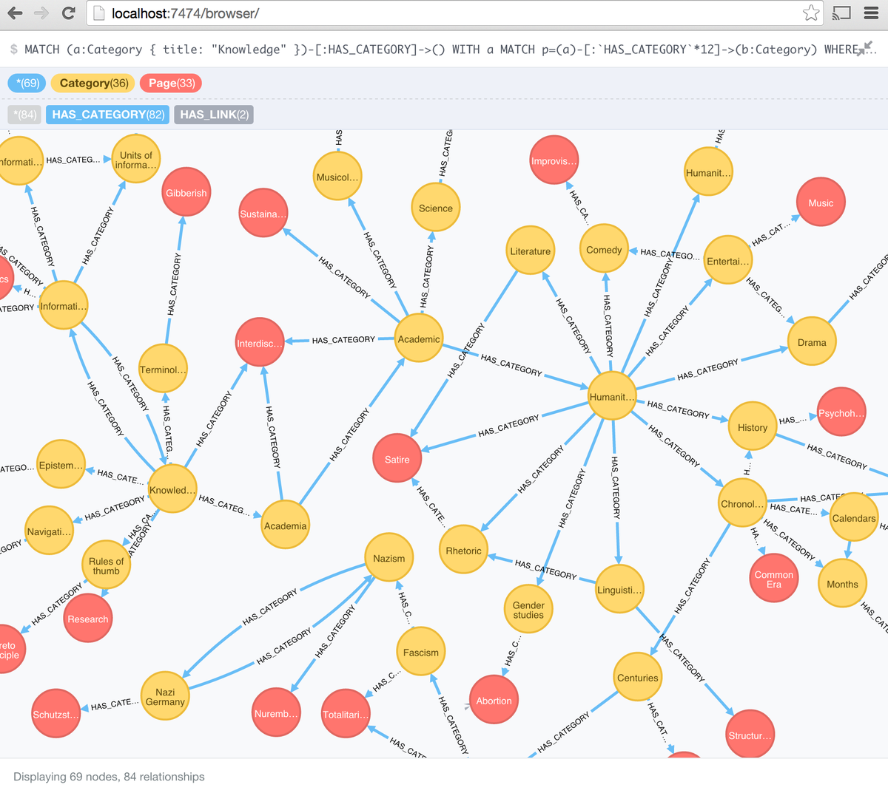
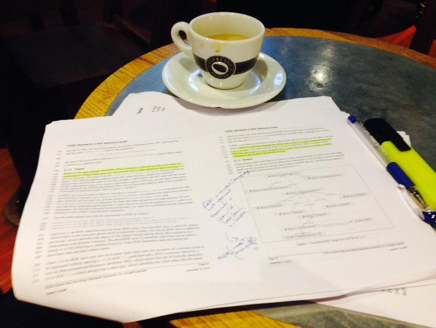

January 2015
.@westurner @openFDA See also Github issue on "Open, and Linked, FDA data" github.com/FDA/openfda/is…
Cooking and listening to President Obama speak on the Precision Medicine Initiative whitehouse.gov/live/president… HT @atulbutte
My third #FF #FollowFriday is @aaranged see 2015 list medium.com/@kerfors/my-fo… with my notes why I think you should follow Aaron
+1 RT @JamesKobielus: "Build an IoT analytics solution with #bigdata tools" (ow.ly/I9CSI) JK--Very good architectural discussion
Thanks @andreaskrohn @jharmn for challenging my info architectur 'future-proof' argument for key-value-pair/EAV youtube.com/watch?v=-MBXsm…
@fhir_furore @ianmcnicoll @jhalamka How about FHIR JSON-LD as a next step? Early ideas dbooth.org/2015/fhir/json… from wiki.hl7.org/index.php?titl…
Will be interesting to see how @Tamr_Inc, a "data wrangling" company, approach conversions to @CDISC standards tamr.com/toward-automat…
"The disproportionate spending on services is a sign of immaturity in how we manage data." hbr.org/2014/06/what-b… HT @andyhpalmer
Data as "First-class Citizens", Guest Editorial, D-Lib Magazine Jan/Feb 2015 <- several #LinkedData related papers dlib.org/dlib/january15…
"Describing Customizable Products on the Web of Data" events.linkeddata.org/ldow2013/paper… a #LDOW2013 paper from Renault #LinkedData ping @flandqvist
Nice thread: twitter.com/kennybastani/s… Using @neo4j for @wikidata and #DBpedia with @kennybastani and @danbri

After a busy week I've now updated my #FF #FollowFriday 2015 list medium.com/@kerfors/my-fo… with a note on why I follow @hildabast
My second #FF 2015 is @hildabast I'll update my blog post with some notes on why asap medium.com/@kerfors/my-fo…
Interesting #harvarddataprivacy feed now: Privacy in a Networked World @Harvard_IACS symposium hvrd.me/HOP4v
Relaxing over a beer in transit, thinking of who will be my second #FF 2015 medium.com/@kerfors/my-fo… - @aaranged or @hildabast?
Great blog by the @SALUSProject_EU srdc.com.tr/projects/salus… Good example for others, eg @IMI_JU @EU_H2020 projects
Very nice blog wewantyourdata.se in Swedish: Big Data, Dataanalys, Internet of Things from @landerholm HT @mikaelhuss
#OpenData initiative: Uppsala Monitoring Centre WHO Global ICSR statistics. API "with the intention to use RDF" umc-products.com/OpenDataInitia…
CDISC Unit CT to UCUM Mapping: A Semantic Web Technology Approach wiki.cdisc.org/display/SHARE/… See also kerfors.blogspot.se/2013/10/the-fu… HT @LexJansen
My first #FF #FollowFriday is @nicolastorzec for a great feed on #datascience etc, see my list for 2015 medium.com/@kerfors/my-fo…
So many nice quotes in @theIOM report on data sharing of clinical trial data iom.edu/datasharing maybe I'll blog about it #datasharing
"To ensure such computability [clinical trial] data cannot be shared only as document files (e.g., PDF, Word)." iom.edu/datasharing
"[clinical trial] data must be in a computable form amenable to automated methods of search, analysis, visualization" iom.edu/datasharing
Looking forward #moocse -> MT @MariaHagglund: Kicking off 2015 by announcing our eHealth MOOC edx.org/course/ehealth…
Looking for a device independent vocabulary for forms and field semantics, similar to vocab.deri.ie/rdforms. Any ideas? RT=<3
Nice blog post from @bobdc: R (and SPARQL), part 1 snee.com/bobdc.blog/201… #rstat #SemanticWeb #sparql
Looking for a device independent vocabulary for forms and field semantics, similar to vocab.deri.ie/rdforms. Any ideas? #mhealth
Reading #CDISC Functional Tests/Questionnaires cdisc.org/ft-and-qt and #HL7/#FHIR Resource Questionnaire hl7.org/implement/stan…
MT @wmougayar: The Blockchain is the New Database, Get Ready to Rewrite Everything startupmanagement.org/2014/12/27/the… (HT @egonwillighagen)
Silicon Valley Innovation Center (@SVI_Center) Web 3.0/ #SemanticWeb will change the entire internet as we know it: ow.ly/GHASm
Reviewing the Reference guide for #CDISC Standards in RDF made me revisit my earlier blog post on CTs/Value Sets kerfors.blogspot.se/2013/10/the-fu…
Reviwing the excellent Reference guide: "CDISC Standards in RDF" cdisc.org/standards/data… #semanticweb #CDISC

"From people browsing the web to buy, to buying being done by machines sucking up the data" --@timberners_lee theodi.org/blog/25-years-…
. @joe_hellerstein How about the recent development of @wikidata for the core of wikipedia (and Google KBs)? semanticweb.com/freebase-shutt…
"web of document - syndrome of progressive, comparative disclosure - now also same for web of data" --@timberners_lee theodi.org/blog/25-years-…
@cdiscSHARE @swhume Excellent. Would be nice to understand RCs in relation to Archetypes twitter.com/kerfors/status…
New CDISC Standards in RDF Reference Now Available for Public Review Comments Due 20 Febr 2015 cdisc.org/standards/data…
Frederik Malfait, Roche, presenting in #HL7 RDF subgroup what FDA/PhUSE and #CDISC do with RDF tinyurl.com/CDISC-Webinar-… tinyurl.com/PRG-meeting-PDF
I've read about Research Concepts in @cdiscSHARE wiki.cdisc.org/display/SHARE/… However, I'm still quite confused cc: @swhume
I look forward to tomorrow's #HL7's RDF group first call 2015 wiki.hl7.org/index.php?titl… w/ Frederik Malfait talking about #CDISC/#PhUSE RDF
How Quantified-Self Will Redefine the Future of the Enterprise @WIRED wired.com/2015/01/quanti… "personalized performance dashboard"
MT @eswc_conf: Viktor Mayer-Schönberger (@Viktor_MS) #eswc2015 keynote speaker "Why Big Data Matters - a lot" bit.ly/1AgGOQU
This feels like a good one for my tweet no 10.000: RT @GilPress: A Very Short #History Of The #Internet And The #Web onforb.es/1K6OCJP
Reading: First draft of WP2 "Semantic mapping" for #WD4R proposal:
docs.google.com/document/d/1U2… #Wikidata via @EvoMRI
docs.google.com/document/d/1U2… #Wikidata via @EvoMRI
Reading: "Desiderata for an authoritative representation of MeSH in RDF" mor.nlm.nih.gov/pubs/pdf/2014-… see also id.nlm.nih.gov/mesh/
Bookmarked: "Validation Rules for Assessing and Improving SKOS Mapping Quality" on CiteUlike ift.tt/1xAdeac